Asesoría personalizada
Orientación técnica para tomar mejores decisiones sobre tus equipos y su operación.

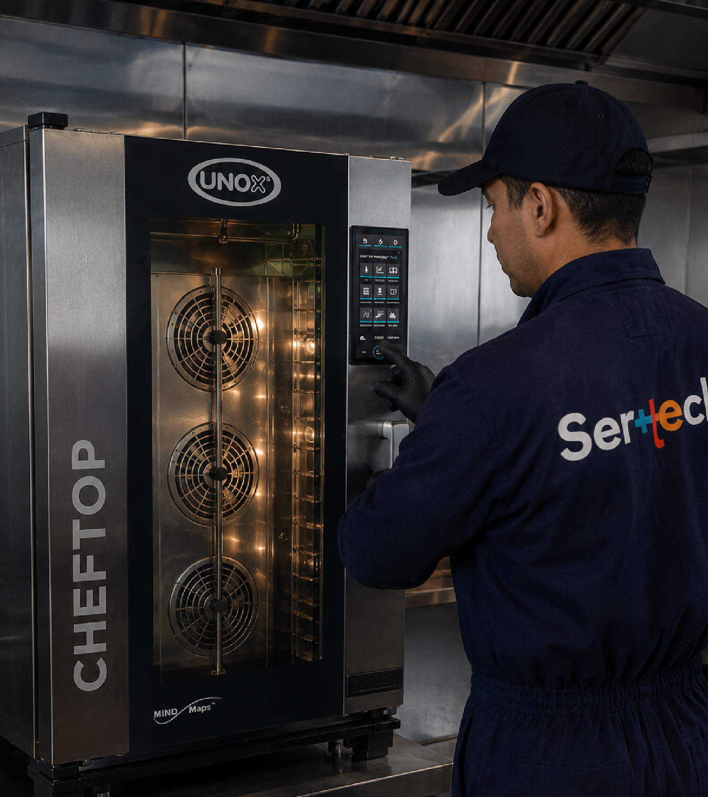
Diagnóstico, mantenimiento y reparación especializada para equipos gastronómicos e industriales. Respondemos cuando tu operación más lo necesita.
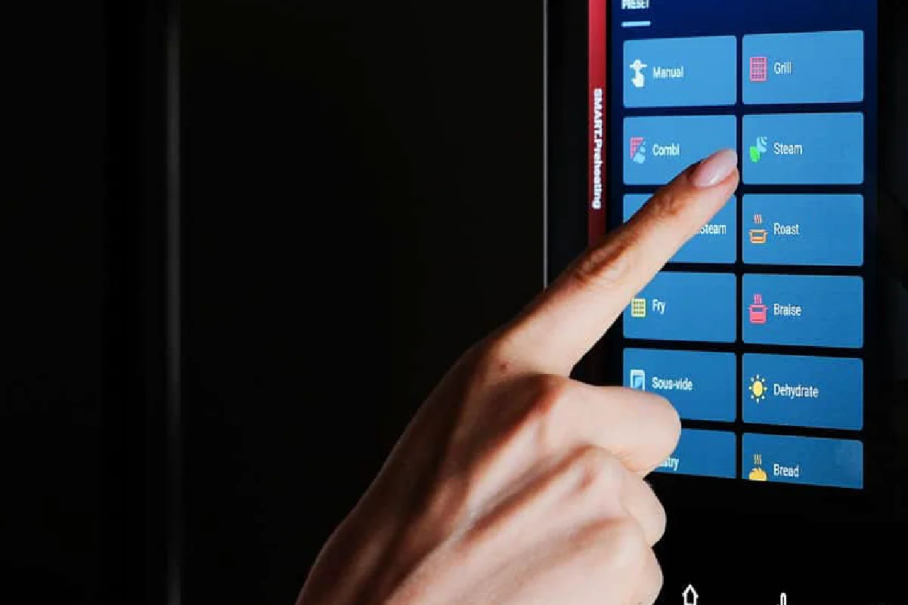
Sabemos que detrás de cada equipo hay una operación que necesita continuar. Por eso trabajamos con diagnósticos precisos, soluciones técnicas y un servicio enfocado en reducir tiempos de inactividad.
Acompañamos cada etapa del funcionamiento de tus equipos con un servicio técnico especializado.
Orientación técnica para tomar mejores decisiones sobre tus equipos y su operación.
Identificamos fallas y evaluamos el estado de tus equipos con criterio técnico.
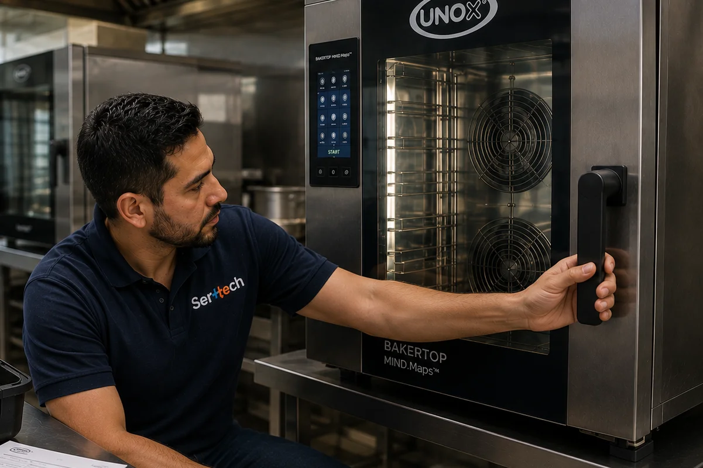
Aseguramos una correcta instalación para que tus equipos comiencen a operar correctamente.
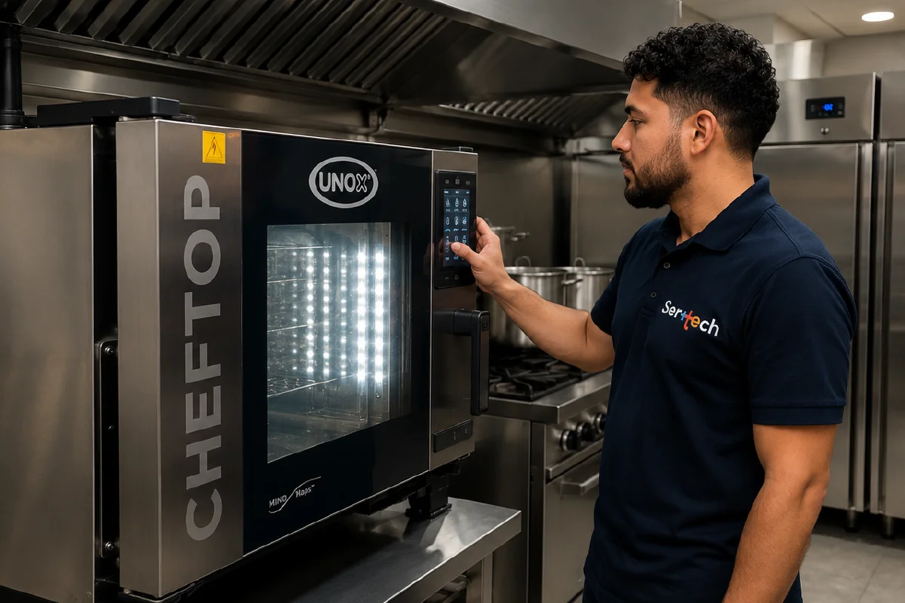
Reducimos riesgos y ayudamos a prevenir fallas que puedan detener tu operación.
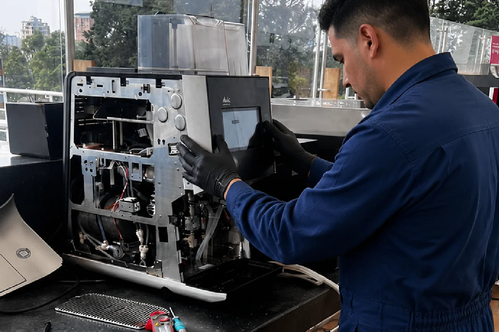
Intervenimos técnicamente para recuperar el funcionamiento de tus equipos.
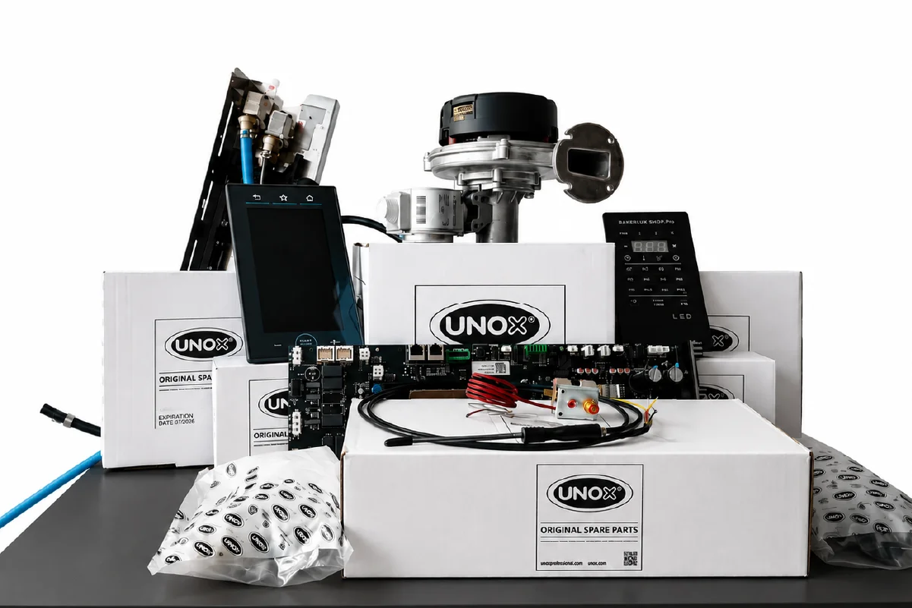
Trabajamos con repuestos adecuados para mantener el rendimiento y confiabilidad.
EXPERIENCIA CON EQUIPOS Y MARCAS RECONOCIDAS
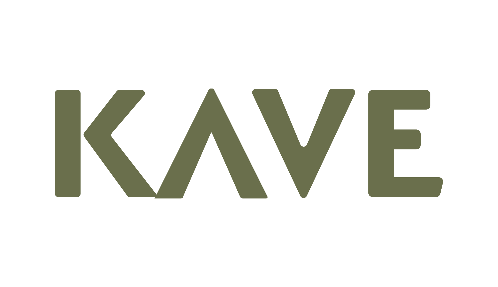
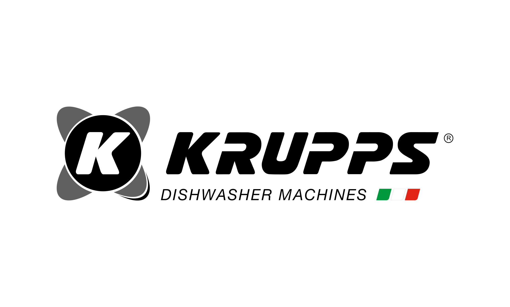

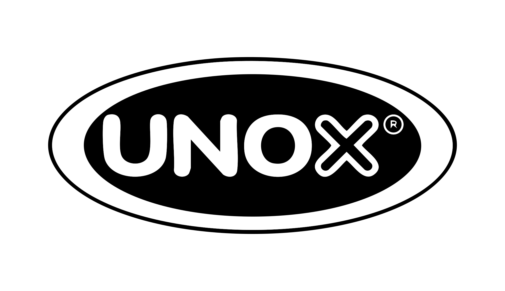
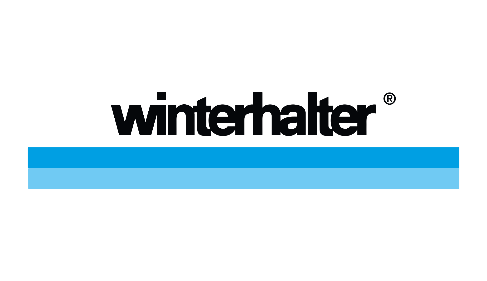
Algunos de los trabajos y proyectos en los que hemos acompañado a nuestros clientes.
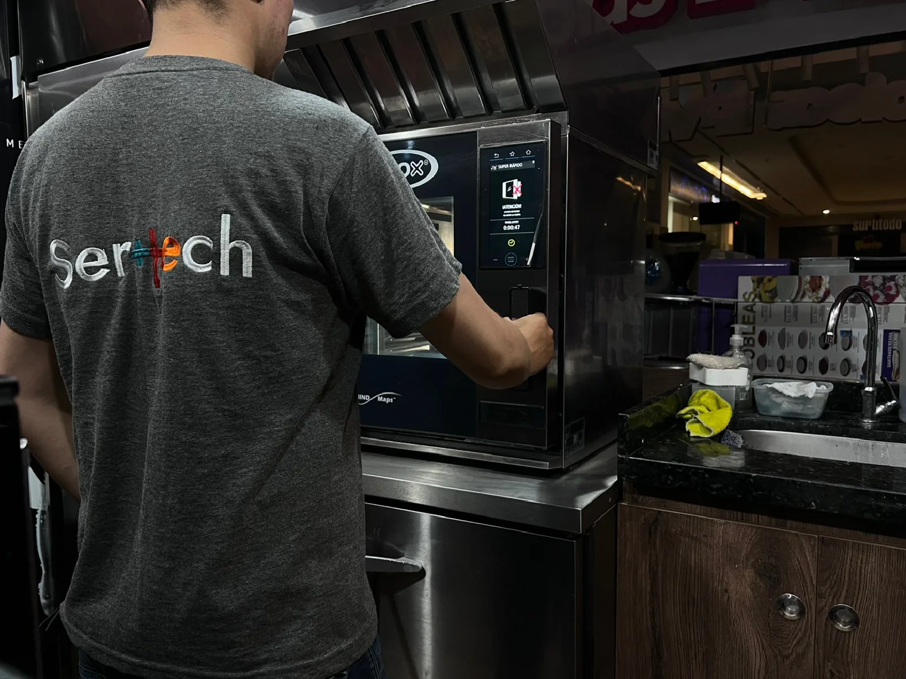
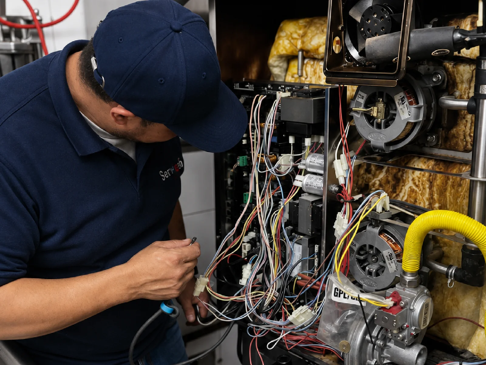
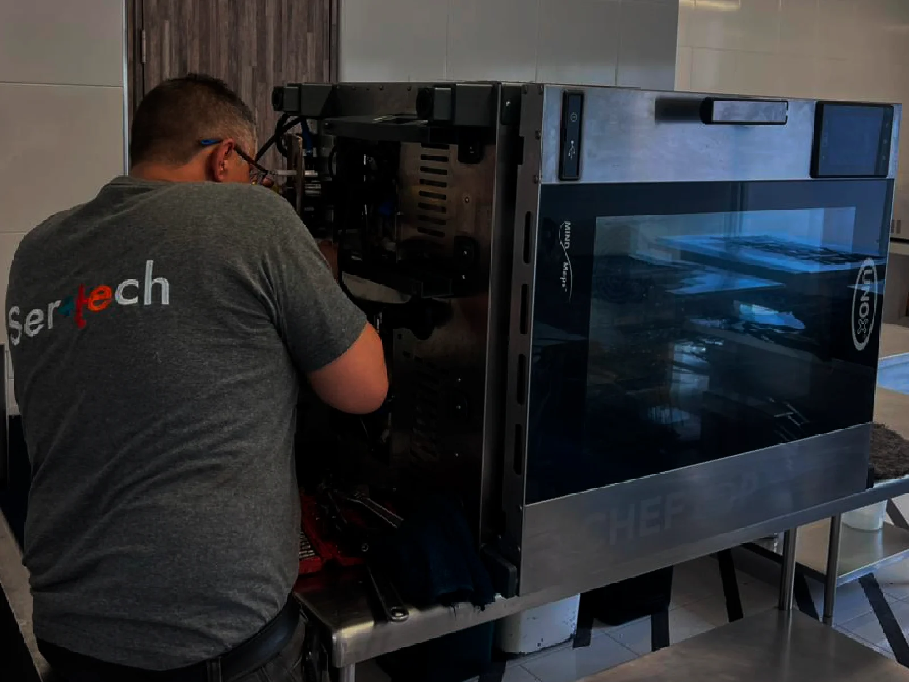
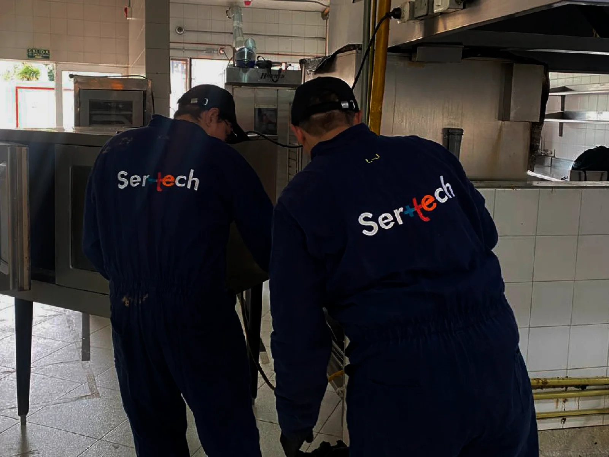
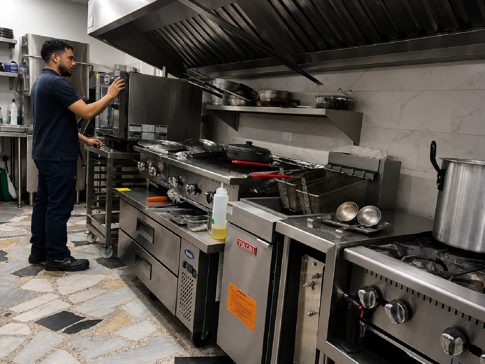
Brindamos atención técnica en diferentes ciudades y zonas del país, acompañando a empresas que necesitan mantener sus equipos en funcionamiento.

Cuéntanos qué está pasando y encontremos juntos la mejor solución técnica.